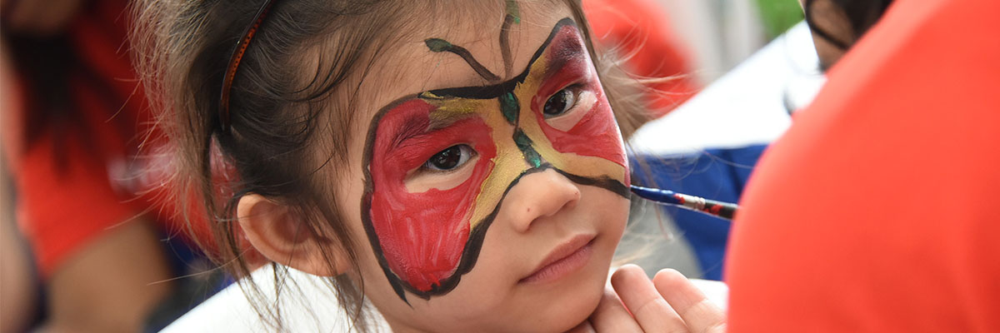
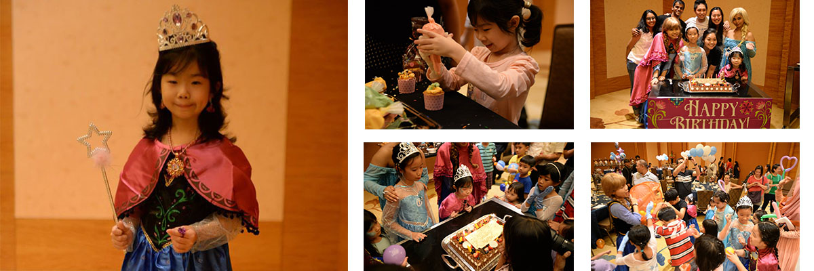
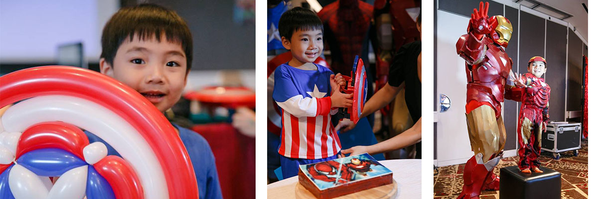

"I wish to be Santa's Elf!"
Wish Kid #1100
Meet 6-year-old Sally Teo, who lives with Burkitt's Lymphoma. Sally is a bright and bubbly girl who enjoys drawing and baking! She also loves fairytales and stories of folklore, especially Santa Claus! Referred to the organisation by her parents who wanted to give her a very special and unforgettable Santa-themed birthday, our head volunteer Tom gathered a group of our volunteers together to produce a very special celebration for Sally.
Paper sculptors, painting session, toy-making sessions and even a bouncy castle was available at Sally's birthday party held at Suntec City on the 10th of November 2015! Of course, the role of Santa Claus was given to Sally as she painted and gave out her drawings to everyone who attended!
All these were made possible with the financial aid from our donators, the sponsors and last but not least our very own volunteers! We at Make-A-Wish Foundation Singapore would like to thank everyone that is involved in making Sally's wish come true!
Our Volunteers Thoughts
TOM: "The whole planning process was a very exciting and fun process. Sally's liveliness in person was awe-inspiring and therapeutic!"
CLARA: "Learning about Sally helped me remember how fortunate we are, and how we should cherish what we have in life!"

"I wish to be a princess!"
Wish Kid #1099
Meet 5-year-old Megan Yeo, who lives with Acute Lymphoblastic Leukemia. Megan is an active and bubbly young girl who loves to paint and bake! Like many other children her age, one of her favourite movies is Frozen.
We were approached by her parents who wanted to organise a big Frozen-themed birthday party for their daughter but were financially and physically drained. Held at Marina Bay Sands, Megan's wish came true on the 7th of November 2015 with cupcake-baking session, a magic show, a bouncy castle and of course snow and the main characters of Frozen, Anna and Elsa!
All these were made possible with the financial aid from our donators, the sponsors and last but not least our very own volunteers! We at Make-A-Wish Foundation Singapore would like to thank everyone that is involved in making Megan's wish come true!
Our Volunteers Thoughts
TOM: "The whole planning process was a very exciting and fun process. Megan's liveliness in person was awe-inspiring and therapeutic!"
CLARA: "Interacting with Megan helped me remember how fortunate we are, and how we should cherish what we have in life!"

"I wish to be a superhero!"
Wish Kid #1098
Meet 5-year-old Wen Le, who lived and succesfully defeated Acute Lymphoblastic Leukemia. Wen Le is an active and energetic young boy who loves reading superhero comics such as Superman and Captain America like other young boys his age does! Held at the Fairmont Singapore on the 4th of November 2015, Wen Le truly celebrated like a superhero!
With the assistance of GoodCostumesInc, cosplayers dressed as Iron Man, Spider Man, Captain America and more joined the celebration of Wen Le's victory over his condition! Activities such as airbrush tattooing, face painting and even a performance from a local band was available at the party!
All these were made possible with the financial aid from our donators, the sponsors and last but not least our very own volunteers! We at Make-A-Wish Foundation Singapore would like to thank everyone that is involved in making Megan's wish come true!
Our Volunteers Thoughts
TOM: "The whole planning process was a very exciting and fun process. Wen Le's liveliness in person was awe-inspiring and therapeutic!"
CLARA: "Learning about Wen Le helped me remember how fortunate we are, and how we should cherish what we have in life!"